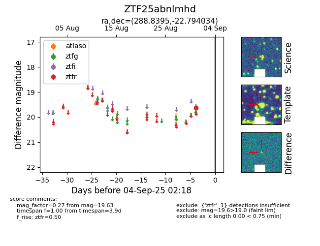

FINK: ZTF25abnlmhd
Lasair: ZTF25abnlmhd
ALeRCE: ZTF25abnlmhd
ZTF25abnlmhd (ztf,fink)
equatorial (ra, dec) = (288.8395,-22.79403)
galactic (l, b) = (14.7575,-15.19688)

last ztfr=19.63
1 ztfr detections